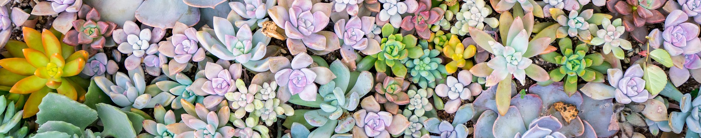

Inicio
Nosotros
Galeria
Contacto

El lugar donde encontrás todas las suculentas
Seguinos en nuestras redes sociales y aprende todo sobre el cuidado de las suculentas
Cómo cuidar tus suculentas
Decoraciones con suculentas